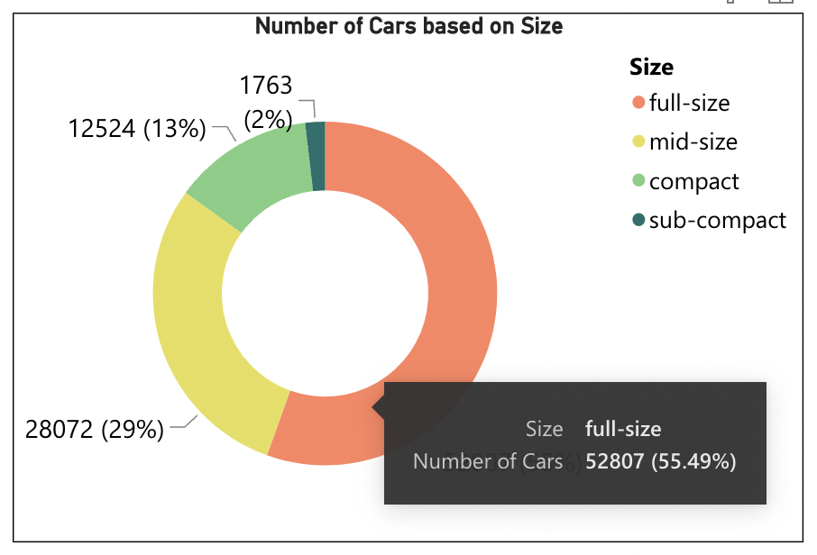

In recent times, we have observed a global increase in demand for used cars. Whether from the perspective of a buyer or seller, it is always a dilemma to price a used car appropriately. The major concern is if the price quoted is based on the worthiness of the vehicle or not. So, in this project, we will create an interactive visualizations using Microsoft PowerBI which show the price of used cars in accordance with several features.
We are using an open-source data set of used cars from Kaggle which consists of 26 columns like manufacturer, model, condition, fuel, color, mileage for around 400000 used cars. Columns: Id, Url, Region, Region URL, Price, Year, Manufacturer, Model, Condition, Cylinders, Fuel,Odometer (Miles travelled by the Vehicle), Title Status, Transmission, VIN, Drive, Size, Type, Paint Color, Imageurl, Description, County, State, Latitude, Longitude, Posting Date.
Number of Rows: 400000
Of all these available columns, we used the most important features that contribute most to the price of a car like Region, Price, Year, Manufacturer, Model, Condition, Odometer, Size, Vehicle Type, and State.
First, we explored the dataset by performing exploratory data analysis in python and understood the distribution of the dataset by plotting few bar plots and pie charts.
We even created a word cloud with manufacturer names to see the most popular brands.
Since the dataset is very rich, we brainstormed and listed out the use cases that our visualizations should be able to answer.
We chose the colors that are clearly distinct. So that color blind people will be able to discern the graphs easily.
Following that, we attempted to arrange the graphics in such a way that the most important visuals are visible at the top of the page.
Post that, we have tried to enhance these visualizations by adding more than one attribute in the graph. So that each visual can answer the depth questions as well.
Later, we added several filters. So that it is easy for the users to filter the results.
So, for the filters which have more values, it is difficult to scroll and select the options. So, added the search option to ease selecting the values.
To enhance the slicing even more, we changed the Price and Odometer filters as sliders.
Microsoft PowerBI
Html
CSS
The developed visualizations, answered several questions related to used cars's price.
From the above visual, we can easily observe how the cars are distributed based on their sizes from the doughnut graphic.
The pie chart above depicts the distribution of cars according to their condition.

The number of cars by brand and their average price are shown in the clustered column chart above.
When the chart is drilled down, it reveals the car model in addition to the brand, as shown below.
The circles in the above geographic graph represent the number of cars available in each region. The wider the circle, the more automobiles are available in that area.
The above stacked column chart shows the average price of the car by State and the size. In this visual, the legend is size.
When this graph is drilled down, it looks like below and in addition to state and size split, it also shows the brand split.
The above bar and line chart shows the number of cars manufactured and the average price of the car in a particular year.
The bars depict the number of cars, and the line shows the average price of the car.
https://www.kaggle.com/austinreese/craigslist-carstrucks-data
https://docs.microsoft.com/en-us/power-bi/visuals/power-bi-visualization-doughnut-charts
https://docs.microsoft.com/en-us/power-bi/create-reports/service-report-create-new
https://amueller.github.io/word_cloud/auto_examples/masked.html
Arun contributed to project proposal vision and editing, use case analysis, Embedding PowerBI report with Html, Design document.
Palak contributed to Data cleaning and preprocessing, Exploratory Data Analysis, Landing UI page Html and CSS of interface.
Sowmya contributed to project proposal initial draft, PowerBI report visualization, Design document, Video.